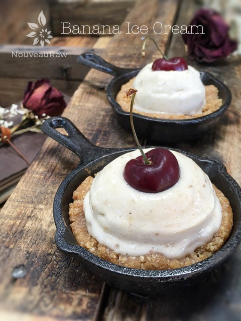

Banana Ice Cream

~ raw, vegan, gluten-free ~
Ok folks, it doesn’t get any easier or healthier than this… Banana Ice Cream is free of gluten, dairy, soy, nuts, food coloring, and artificial ingredients! Technically, it only takes one ingredient – bananas. But I tend to add a little almond milk.
Raw Food Staple Stock
I always keep a bag of frozen bananas in my freezer. They are great in smoothies, and they also make fantastic ice cream. The real key is to ensure that your frozen bananas are ripe, this will significantly affect the flavor of the ice cream. I simply allow my bananas to ripen. Besides, green bananas are very starchy and can be difficult to digest.
You want the skins to be speckled with brown spots (not bruises). As the banana ripens, its starch converts to sugar. The riper the banana, the creamier, and sweeter it tastes.
If the bananas you buy are too green, you can put them in a brown paper bag with an apple or tomato overnight to speed up the ripening process. Unripe bananas should not be placed in the refrigerator. This will interrupt the ripening process, and they may not be able to resume the ripening process even if they are returned to room temperature.
Once they reach the perfect level of ripeness, peel them and freeze.
- Peel all of the bananas.
- Slice them into 1- to 2-inch chunks. …
- Arrange them in a single layer on a parchment paper-lined rimmed sheet pan.
- Place in the freezer.
- Once frozen, transfer to freezer-safe bags and return to the freezer.
Just by blending frozen bananas, you get the perfect soft serve ice cream. That’s it! Just one ingredient!! If you want to get creative, you can add a nut milk to it and make a shake/malt. You can make top it with nuts, chocolate… well shoot, it’s endless, so I will let you be inventive. You will need a good high-powered blender or food processor. If you want to create fun swirled looking ice, as shown in the photo… just place the ice cream in a zip-lock bag and snip the bottom corner off. Instant piping bag. Enjoy!
Ingredients:
- Frozen Bananas ( the quantity depends on how many you are serving)
- 1/4 + cup nut milk (all depends on how many bananas you use)
Preparation:
- Remove bananas from the freezer.
- Place frozen banana chunks into a high-powered blender or food processor. Blend until light, fluffy and creamy.
- Add the nut milk as needed. For ice cream consistency, use the least amount possible. For milkshake consistency, use more.
- Enjoy right away!
© AmieSue.com